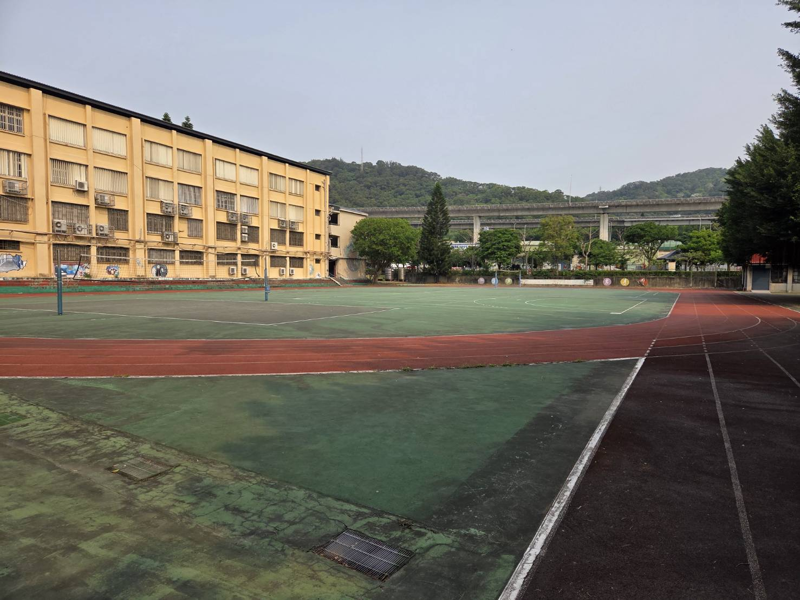
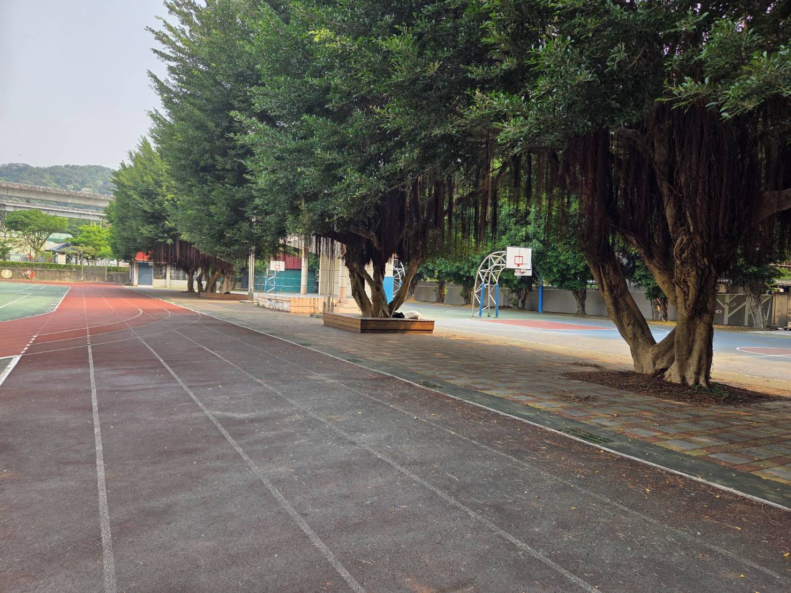

在泰山國中旁巍峨佇立的山脈，其實就是我們熟知的「林口台地」。因為這座山脈的頂部平坦如桌面，所以在古時候，先民們便賦予了它一個貼切又充滿歷史感的名稱——「平頂山」。
The towering mountain range standing beside Taishan Junior High School is actually the well-known "Linkou Plateau". Because its top is as flat as a table, early settlers gave it a fitting and historically rich name—"Pingdingshan" (Flat-topped Mountain).
平頂山不僅是泰山區重要的地理屏障，更是泰山國中得天獨厚的自然教室。透過校本課程的引導，我們將帶領學生深入了解這片土地的地質風貌、生態環境以及先民在此開墾的歷史足跡，讓學習不再侷限於課本，而是向下紮根於我們生長的土地。
Pingdingshan is not only an important geographical barrier for Taishan District, but also a unique natural classroom for Taishan Junior High School. Through our school-based curriculum, we guide students to deeply understand the geological features, ecological environment, and historical footprints of early pioneers on this land, so that learning is no longer confined to textbooks, but rooted in the land where we grow.
追溯歷史，泰山的古地名其實稱為「山腳」。為何會有這個稱呼呢？正因為泰山區的地理位置，剛好就位於林口台地（平頂山）的山腳下。
Tracing back in history, the ancient place name of Taishan was actually "Shanjiao" (Foot of the Mountain). Why this name? Exactly because the geographical location of Taishan District is right at the foot of the Linkou Plateau (Pingdingshan).
雖然此地後來已經改名為「泰山」，但「山腳」仍是泰山在歷史軌跡中留下來的重要名稱。時至今日，泰山區內依然保留著一個名為「山腳里」的行政區域，見證著這段與地理環境息息相關的地方發展史。
Although the place was later renamed "Taishan", "Shanjiao" remains an important name in Taishan's history. To this day, there is still an administrative area called "Shanjiao Village" in Taishan District, bearing witness to this local development history closely related to its geographical environment.
泰山國中座落於平頂山腳下，校園環境與自然山林完美交融。在校園的各個角落，都能感受到這座山的守護與綠意。寬廣的操場背景就是連綿的青翠山脈，而校園內茂密的老榕樹也與後山的自然生態遙相呼應。
Located at the foot of Pingdingshan, Taishan Junior High School's campus blends perfectly with the natural forests. In every corner of the campus, you can feel the protection and greenery of this mountain. The broad playground is set against a backdrop of continuous green mountain ranges, and the dense old banyan trees on campus echo the natural ecology of the mountain behind.

